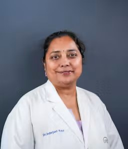

Dr. Inderjeet Kaur
Principal Investigator · Scientist
Molecular Genetics
Dr. Kaur completed her doctoral studies in molecular human genetics at Guru Nanak Dev University (GNDU), Amritsar, and is a Scientist at LVPEI, where she leads research on the genetics, biomarkers and biology of complex eye diseases.